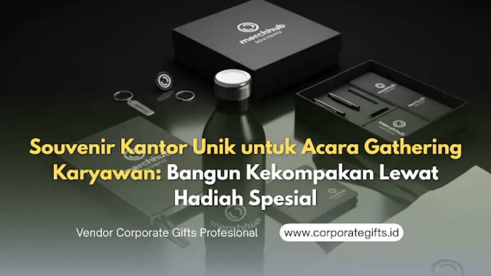

Corporate Gifts ID - Dalam lanskap manajemen sumber daya manusia modern, program employee engagement menjadi pilar utama pembangun retensi dan motivasi kerja. Salah satu medium paling berdampak untuk mengikat kedekatan antar-anggota tim adalah melalui agenda gathering atau outing kantor. Namun, di balik keseruan aktivitas team building, elemen cinderamata atau souvenir kantor unik memegang peranan krusial sebagai jembatan emosional pasca-acara. Memilih merchandise branded yang fungsional, bernilai estetika tinggi, dan memuat pesan apresiasi tulus akan memperkuat rasa memiliki (sense of belonging) karyawan terhadap organisasi.
Souvenir gathering yang tepat bukan sekadar benda sekali pakai, melainkan instrumen komunikasi internal yang mengabadikan memori positif kebersamaan di tempat kerja.
Poin Kunci Souvenir Gathering Karyawan:
- Penguat Ikatan Emosional Tim: Souvenir berfungsi sebagai memorabilia fisik yang memperpanjang memori positif dan kekompakan dari kegiatan gathering.
- Media Internal Branding Efektif: Penggunaan item berlogo perusahaan setiap hari di meja kerja atau aktivitas harian meningkatkan brand advocacy internal.
- Personalisasi Konsep Acara: Opsi produk outdoor (tumbler sport, topi custom, dry bag) untuk outing alam vs gift set elegan untuk gala dinner formal.
- Optimalisasi Anggaran Fleksibel: Pilihan paket modular mulai dari Rp50.000 hingga Rp250.000+ per karyawan tanpa menurunkan standar kualitas.
Urgensi Souvenir Kantor Unik dalam Acara Gathering Perusahaan
Acara gathering dirancang untuk mencairkan kejenuhan rutinitas operasional dan mempererat sinergi lintas divisi. Namun, atmosfer kegembiraan tersebut sering kali memudar setelah karyawan kembali ke meja kerja masing-masing. Di sinilah peran souvenir kantor unik bekerja:
- Sebagai Sauvenir Berkelanjutan: Barang fisik yang disimpan di meja kerja—seperti desk organizer multifungsi atau tumbler vacuum flask—menjadi pengingat konstan atas apresiasi perusahaan.
- Simbol Kesetaraan: Ketika seluruh staf dari tingkat junior hingga direksi menerima cinderamata berkualitas sama, tercipta rasa kebersamaan yang kuat tanpa sekat birokrasi.
- Pemicu Kebanggaan Kolektif: Merchandise dengan estetika modern mendorong karyawan untuk membagikan foto produk di media sosial pribadi, yang secara organik memperkuat citra employer branding.
Psikologi Hadiah: Meningkatkan Loyalitas dan Sense of Belonging
Dari kacamata psikologi organisasi, pemberian hadiah korporat memicu prinsip reciprocity (timbal balik positif). Karyawan yang merasa diperhatikan melalui pemberian produk yang benar-benar berguna akan memiliki tingkat keterikatan kerja yang lebih tinggi.
Pilihan produk yang dipersonalisasi—seperti penyematan nama panggilan karyawan via grafir laser pada tumbler atau pouch—memberikan sentuhan personal yang mengubah barang pabrikan menjadi cinderamata berharga.

Kompak dan fungsional: Penggunaan apparel seragam dan tumbler custom mendukung kelancaran seluruh rangkaian kegiatan gathering karyawan.
Menyesuaikan Kategori Souvenir dengan Karakter & Tema Gathering
Setiap konsep acara menuntut jenis merchandise yang berbeda agar barang tersebut langsung terpakai dan relevan:
1. Gathering Outdoor & Adventure (Pantai, Pegunungan, Outbound)
Fokuskan pada ketahanan cuaca dan utilitas lapangan. Pilihan utama meliputi topi baseball custom bordir, kaos katun combed seragam event, dry bag anti-air, kacamata hitam branded, dan botol minum sport berbahan tritan atau stainless steel SUS 304.
2. Family Day & Fun Games
Pilihlah item yang ramah keluarga, seperti lunch box set bpa-free, payung lipat otomatis tahan angin, tas ransel lipat travel, atau selimut travel ringkas yang dapat dipakai bersama anggota keluarga.
3. Gala Dinner & Annual Review Meeting
Untuk acara formal dalam ruangan (ballroom hotel), rekomendasikan gift set hardbox elegan yang memuat pulpen metal rollerball eksklusif, wireless charger pad kayu, dan buku agenda kulit PU custom deboss.
Manfaat Strategis Investasi Souvenir bagi Budaya Perusahaan
Pengadaan souvenir gathering bukan pos pengeluaran habis pakai, melainkan investasi strategis yang memberikan imbal hasil terukur:
- Membangun Budaya Perusahaan yang Solid: Warna korporat dan slogan motivasi pada souvenir memperkuat pemahaman nilai inti perusahaan.
- Mereduksi Turn-Over Karyawan: Apresiasi berkala berkontribusi nyata dalam menekan kejenuhan kerja dan menjaga loyalitas talenta terbaik.
- Media Promosi Organik: Merchandise bermutu yang dipakai karyawan saat berolahraga, commuting, atau traveling otomatis memperluas jangkauan visual merek di ruang publik.
Tabel Rekomendasi Paket Souvenir Gathering Berdasarkan Tema & Budget
Berikut matriks panduan pemilihan paket souvenir gathering karyawan dari CorporateGifts.ID untuk menyesuaikan anggaran kepanitiaan Anda:
| Tema Acara Gathering | Komposisi Item Souvenir | Estimasi Budget / Orang | Karakteristik & Kegunaan | Dampak ke Karyawan |
|---|---|---|---|---|
| Outbound & Outdoor Adventure | Kaos Dry-Fit / Combed + Topi Custom + Tumbler Sport + Dry Bag 5L | Rp85.000 - Rp145.000 | Tahan air, ringan, langsung dipakai saat aktivitas fisik | Meningkatkan kekompakan visual tim di lapangan |
| Family Day & Rekreasi Santai | Tote Bag Kanvas + Lunch Box Set BPA-Free + Payung Lipat Otomatis + Handuk Mini | Rp75.000 - Rp130.000 | Praktis untuk keluarga, ramah lingkungan, awet | Menciptakan kesan perhatian menyeluruh ke keluarga staf |
| Formal Gala Dinner & Awarding | Hardbox Custom + Smart Tumbler LED + Pen Metal Grafir + Powerbank Slim 10.000 mAh | Rp165.000 - Rp275.000 | Elegan, bernilai teknologi tinggi, kemasan mewah | Membangun kebanggaan profesional dan loyalitas mendalam |
Siap menyukseskan gathering kantor Anda berikutnya dengan cinderamata yang berkesan? Jelajahi opsi lengkap di katalog souvenir kantor kami atau konsultasikan pengadaan massal bergaransi melalui formulir Permintaan Penawaran Resmi (RFQ) CorporateGifts.ID.